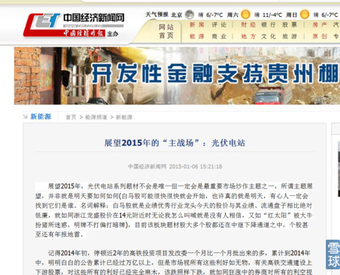
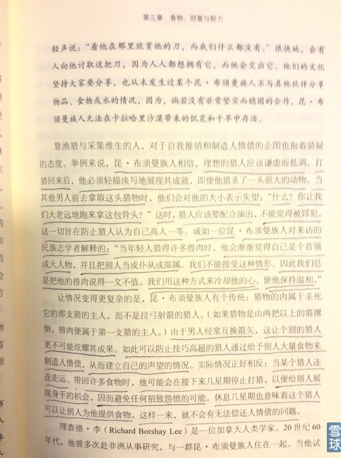

刚买好机票，明天又要出差。看来周末本来准备写点有用的东西计划要泡汤了。不过，我们的重仓股安心持有就好。呵呵。
下图是我今天下午去看牙医候诊时所看书的图片，做了标记部分与我有价值观共振同感，特意分享给大家。

以下是我今天晚上与粉丝的聊天对话：
宇宙自然流@炒的是心:我有一个观点 不知道对不对 很多事情 比如炒股：天赋对成功的影响要远远大过后天的努力吗？
回复@宇宙自然流: 说道点子上了。但是，炒股又不同于赌场，赌场是暗牌赌博，股市很大程度上是明牌对赌。这样说吧：嗓子好的人不一定会成为歌唱家，但是歌唱家一定是先天嗓子好（例如资本请来的操盘手）。但是，最脍炙人口的歌曲都是嗓子不好的人写出来的（例如资本投资人）。
张师傅学习炒股@炒的是心:600280中央商城的现况与季节性有关系吗？马上要过年了，大家又要开始消费了。
炒的是心回复@张师傅学习炒股: 600280中央商场的业绩太好，好到与股价、流通盘严重不匹配。图形又是那么的经典与好看（我都搞不懂2月17日机构为什么从中大举撤退），我要不是太看好闰土股份以及今天收盘后再看浙富控股（真是越看越欢喜，太漂亮了，这就是眼感，告诉你一个秘密。真正的高手才是在下周一它顺势下滑一点后（也许2%？2.5%？3%？又怎么样呢？）我就押上一些600280。
银行退市银粉吃面:回复@炒的是心:心大师，我十分想明白你文章里写的阶段性头部来临了吗？4月就快来了。
炒的是心回复@银行退市银粉吃面: 每个季节有每个季节的股票轮动规律，我以后可以写个这样的专贴，你们记得提醒我。既然人性使我们不愿意空仓，那我们就选好个股，永远抛开大盘炒个股。不要跟大盘较劲过不去跟它死磕。
夏正嗯@炒的是心:心师，念大学时很喜欢读陈存仁的几本书，他根本不像医生，倒像个投资（投机）商人，对“银元时代”的生活细节描写得丝丝入扣，用物价和经济眼光记录时代的变化。他学会理财，在上海买地发了小财，精心经营自己的精英小圈子，却逃不过政局变化一切推倒重来的现实。就像中国的股市，谁也说了不算，时代说了最算。
炒的是心回复@夏正嗯: 知音啊！同感同感。那样的人生才不枉虚度啊。我每次写帖子看到不喜欢的人，例如那个每天都来送三堆
炒的是心回复@苍天在上: 《舌尖上的历史》这本书看过后你就会明白一个道理：人类世界是“坏人”推动向越来越好的方向发展，所谓的“好人”真的是好心办坏事。例如崔永元，你不能说他人不好良心坏有阴谋吧？自费百万去美国想搞清楚“转基因”食品。但是他都不愿意用一天时间读一本科普类书籍。这本书就有关于人类如何驯化农作物的历史过程，其实“转基因”更精准一点而已，就像中医，也有治好病的，那真的是不断试错和经验。但是没有科学原理支撑。西医就如同对中医的“转基因”效果，使大量的90%以上无效的中医行为去除无效部分，这多好哇，但是，就是有人食古不化抱残守缺。读读“陈存仁”的书（上海人1949赴港），收益会很多，特别是1920年代中医大闹国民政府（他是5代表之一且20几岁，一代名医，可见屁股决定脑袋），强烈推荐读读陈存仁先生的书，大长见识。他一生行医却著书无数，真奇怪，厉害人总是跨界的。
还有一本《安持人物琐记》，是陈巨来老先生写的，他是近500年来都少有的金石篆刻家，读起来也很过瘾，使你们真正了解张大千、溥心畲（南张北溥）、吴湖帆、陆小曼等等等真实近距离观察，是一部深入那类人群的内心、性情、做派最详实的类似间谍情报书，对人性的洞察会使你没有神秘感。当然，我不会像很多人那样死读，毕竟很容易看出，作者有很多屁股决定脑袋的角度，你感受出来后，对人性的了解会更进一步。难怪说：做徐志摩宜，做翁端午难。这本书我觉得值得一读，可惜即使有很多瑕疵这样的好书也不多。
笨鸟三段@炒的是心:关于股票方面的也推荐一点呗，我们读了很多关于股票方面的书，可能是不会融会贯通，也可能是书没用！有用的少！非常希望老师可以推荐一点！谢谢！
炒的是心回复@笨鸟三段: 股票投资书籍不看为妙，这样你还有机会成功。实在要看就看经过上百年洗涤后仍然放出耀眼光芒的此类书。但是，很少会有人有兴趣。例如：你现在就买“欣旺达”。跌了不就是账面嘛又没有减少股数。然后不看盘，过几个月就有翻倍的机会，不然人家炒房子的人咋过来的？技术书看后，你的心就乱了。结果......一地鸡毛。就如同我今天回复：庄家盘面无论如何下杀上冲的对倒，你看到了，对你就有影响，这个影响就是他要达到的目的，你没有看盘，他就对你没有任何影响。所以说，任何庄家技巧都是给看的人看的然后影响他的操作判断。你没有看等于一切都没有发生。企业的利润翻倍再翻倍如果是肯定的，那么时间到了，股价自然就会按照时间预期到达它应该到达的那个位置。这就是最大的技术，你们记住了！
浩然的呆地:@炒的是心:心大，请您过目000410沈阳机床，2015年1月8日今天，是不是也在走红圈？
炒的是心回复@浩然的呆地: 图形架势到是不错，我的困惑是这样的股票，管理层在国家巨大变化的数十年里，它几十年如一日的烂业绩也真是难为他们，这也是一种能力和本事哦。大资金利用大市目前资金的好环境和它之前7.8元的相对低价炒炒筹码还可以，但是现在假设再炒高到50%（没有这样的预期估计你也不敢进）大资金怎么出局呢？除非有内幕：例如重组、技术重大发明、与大前途企业联姻？这些就超出了我的能力范围。我们都不是先知。我之前敢于看好600240华业地产，那是因为有所有的财务报表、公开公告、公司领导讲话的公开澄清。这个沈阳机床哪里有任何公开信息让我们寻找蛛丝马迹？就说工业4.0吧，打个比方，今天四川长虹说，我要工业4.0超过格力、苹果，赶超德国，你信吗？我对这类股票真的是很厌恶。我就是在年销售从2亿元10年成长为100亿元以上企业服务的高管，参与与经历了这个巨变的全过程。我们年销售是零售几十元和几百元不等客单价实现的鞋帽品，100多亿的零售与机床、钢铁类一年100亿元销售是绝对不能同日而语的，所以我对企业的经营与发展核心竞争力是有发言权的。